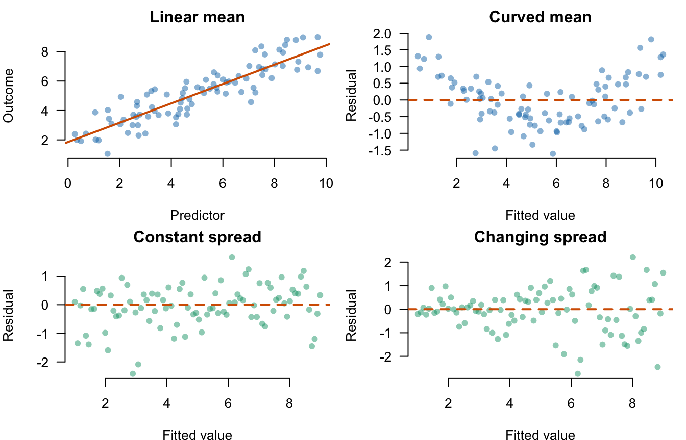
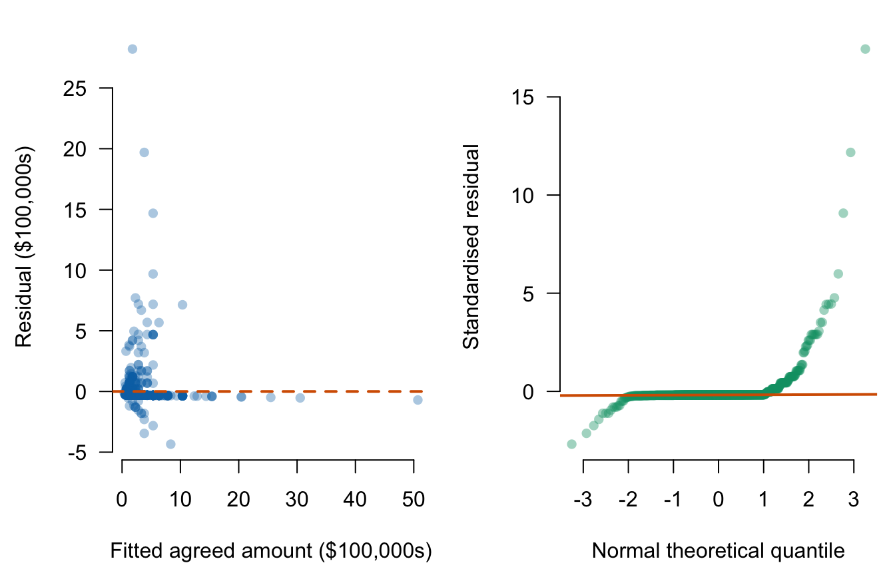

Lecture 2: Regression assumptions and coefficient inference
- state the assumptions behind ordinary least-squares estimation and inference;
- inspect residual plots for non-linearity, unequal variance, and unusual observations;
- interpret coefficient standard errors and confidence intervals;
- test a regression coefficient against zero;
- explain when robust standard errors help and what they cannot repair.
Before class
Video preparation
Watch Stanford Statistical Learning
3.2
Hypothesis Testing and Confidence Intervals. Focus on the standard error of
a coefficient and the test \(H_0:\beta_1=0\).
Review Mathematics Refresher: standardisation and inequalities if needed.
Explain in one sentence why a steep fitted slope can still be estimated imprecisely.
Check your preparation
Slope size and slope precision are different: a steep estimate can have a large standard error when the data are noisy, sparse, dependent, or dominated by unusual observations.
In class
Stanford explanation (review): 3.2 Hypothesis Testing and Confidence Intervals.
What each assumption supports
For
\[ Y_i=\beta_0+\beta_1X_i+\varepsilon_i, \]
separate the conditions below rather than memorising one vague statement that “the data are normal.” Each condition supports a different part of the analysis.
| Condition | Meaning | What it supports |
|---|---|---|
| Linear conditional mean | \(E[Y\mid X=x]=\beta_0+\beta_1x\) over the modelled range | One constant slope summarises the mean relationship |
| Zero conditional mean | \(E[\varepsilon\mid X]=0\) | The slope is not systematically absorbing omitted components related to \(X\) |
| Independent observations | Errors from different rows do not supply duplicate information | The usual standard-error calculation and effective sample size |
| Positive variation in \(X\) | Not all observations have the same predictor value | A slope can be estimated |
| Constant conditional variance | \(\operatorname{Var}(\varepsilon\mid X)=\sigma^2\) | Classical OLS standard errors have the stated form |
| Conditional normality | \(\varepsilon\mid X\) follows a normal distribution | Exact t and F reference distributions in small samples |
The outcome and predictor themselves do not need to be normally distributed. The assumptions concern the conditional mean, errors, and sampling process.
Linearity is about the average, not every point
Individual outcomes need not lie on a line. Linearity says that the average outcome at each predictor value follows a line. A systematic curve in residuals means one constant slope misses part of that average pattern.
Constant variance is about vertical spread
Homoskedasticity says that the conditional variance is the same at each predictor value. It does not say all residuals have the same size. A fan-shaped residual plot—in which the vertical band widens or narrows—suggests changing conditional variance.

The top-right pattern points to a misspecified conditional mean. The bottom right pattern points to non-constant conditional variance. A real plot can show both problems at once, and absence of a visible pattern is not proof that all assumptions hold.
Zero conditional mean and independence require design knowledge
Residual plots cannot establish \(E[\varepsilon\mid X]=0\): fitted OLS residuals are mechanically centred and unobserved confounders are not shown. Ask how the observations were selected, what plausible common causes were omitted, and whether measurement error or reverse direction is credible.
Independence also comes from the data-generating process. Repeated pitches by one venture, teams within one network, or observations close in time may be related. If rows share information, treating all of them as independent can make the effective sample size look too large and SEs too small.
Conditional normality matters most in small samples
Normality concerns the distribution of errors at fixed predictor values. It is used to derive exact small-sample t and F results. With large independent samples and no dominant observations, approximate inference is often less sensitive to moderate non-normality. Severe outliers can still distort both the fitted line and its uncertainty.
Diagnose with residuals

In the left panel, fitted outcomes are horizontal and observed-minus-fitted residuals are vertical, in the outcome’s original units. In the right panel, the horizontal axis gives theoretical normal quantiles and the vertical axis gives ordered standardised residuals; normal residuals should lie roughly on the reference line. Use the panels to ask:
- Is there curvature around zero?
- Does vertical spread change with the fitted value?
- Are there unusually large residuals?
- Does the normal Q–Q plot depart strongly from a straight line?
These data contain influential high-value pitches and unequal residual spread. The classical model summary is therefore a starting point, not the end of the diagnosis.
Standard errors and confidence intervals
##
## Call:
## lm(formula = deal_100k ~ ask_100k, data = deals)
##
## Residuals:
## Min 1Q Median 3Q Max
## -4.3438 -0.3012 -0.2885 -0.2821 28.2115
##
## Coefficients:
## Estimate Std. Error t value Pr(>|t|)
## (Intercept) 0.27571 0.07241 3.808 0.00015 ***
## ask_100k 1.00851 0.01821 55.395 < 2e-16 ***
## ---
## Signif. codes: 0 '***' 0.001 '**' 0.01 '*' 0.05 '.' 0.1 ' ' 1
##
## Residual standard error: 1.619 on 880 degrees of freedom
## Multiple R-squared: 0.7771, Adjusted R-squared: 0.7769
## F-statistic: 3069 on 1 and 880 DF, p-value: < 2.2e-16## 2.5 % 97.5 %
## (Intercept) 0.1335981 0.4178212
## ask_100k 0.9727782 1.0442414The estimated slope is \(b_1=1.0085\) with classical SE 0.0182. A 95% confidence interval is approximately
\[ b_1\pm t_{0.975,880}\operatorname{SE}(b_1). \]
The residual degrees of freedom are \(n-2=882-2=880\): estimating the intercept and slope uses two pieces of information. With \(k\) slopes plus an intercept, residual degrees of freedom become \(n-k-1\).
The interval describes sampling uncertainty under the model conditions. It does not include uncertainty from selection into televised pitches, the decision to analyse only on-air deals, or measurement choices.
Testing a coefficient against zero
The standard significance test is
\[ H_0:\beta_1=0 \qquad\text{versus}\qquad H_1:\beta_1\ne0. \]
The test statistic is
\[ t=\frac{b_1-0}{\operatorname{SE}(b_1)}. \]
coef_table <- summary(deal_model)$coefficients
b1 <- coef_table["ask_100k", "Estimate"]
se_b1 <- coef_table["ask_100k", "Std. Error"]
t_value <- b1 / se_b1
p_value <- 2 * pt(-abs(t_value), df = df.residual(deal_model))
c(estimate = b1, standard_error = se_b1,
t_statistic = t_value, p_value = p_value)## estimate standard_error t_statistic p_value
## 1.008510e+00 1.820567e-02 5.539538e+01 4.161677e-289The tiny p-value is evidence against a zero linear association in this selected sample/model. It does not prove that the model is well specified, that the association is important in every context, or that requesting more causes a larger deal.
Robust standard errors
Heteroskedasticity-consistent, or robust, standard errors relax the constant-variance assumption for inference. The fitted coefficients remain the ordinary least-squares values; the estimated uncertainty changes.
# Run this if these packages are available in the course R environment
library(lmtest)
library(sandwich)
coeftest(deal_model, vcov. = vcovHC(deal_model, type = "HC1"))Robust SEs do not repair non-linearity, omitted-variable bias, dependence across rows, influential errors in the data, or non-random selection. They address one specific problem: misspecification of conditional error variance.
After class
Retrieval
- Which assumption concerns the conditional mean?
- Which assumption do robust SEs relax?
- What is tested by \(H_0:\beta_1=0\)?
- Why need \(X\) and \(Y\) not be normally distributed?
- Name two problems robust SEs do not solve.
- Which assumptions cannot be established from a residual plot alone?
Check your answers
- Linearity and zero conditional mean.
- Homoskedasticity for coefficient inference.
- Whether the population linear slope is zero within the stated model.
- Classical normality concerns the errors conditional on predictors, not the marginal distributions of \(X\) and \(Y\).
- Any two of non-linearity, omitted-variable bias, dependence, measurement error, influential observations, or selection bias.
- Zero conditional mean and independence require knowledge of the design and data-generating process; a plot alone cannot establish them.
Practice
- From
summary(deal_model), write an exam-ready interpretation of the slope, SE, and p-value. - Explain what a funnel shape in a residual-versus-fitted plot suggests.
- Explain what a curved residual pattern suggests.
- State why analysing only successful on-air deals changes the target population.
- Fit
equity_offered_pct ~ season, calculate a 95% interval for its slope, and assess \(H_0:\beta_1=0\). - A regression uses \(n=75\) observations, an intercept, and three slopes. State the residual degrees of freedom and explain the subtraction.
Check your answers
- One extra $100,000 requested is associated with about $100,900 more in the fitted on-air deal amount among deal records; the classical SE is about $1,821 per $100,000 requested and the p-value is below 0.001. The result is associational and its classical SE relies on model conditions that the diagnostic plots call into question.
- Unequal conditional variance.
- A misspecified linear conditional mean.
- Pitches without a deal are structurally excluded, so the analysis describes deal records rather than all televised pitches.
confint(lm(equity_offered_pct ~ season, data = sharks))gives a negative interval that excludes zero; the corresponding two-sided test rejects a zero slope.- \(df=75-3-1=71\). Four coefficients—the intercept and three slopes—are estimated before residual variation is used for inference.
Continue to Lecture 3: Model fit and overall usefulness.
For a more formal treatment, see James et al., An Introduction to Statistical Learning, 2nd ed., Sections 3.1.2 and 3.3.3, and Nieuwenhuis, Statistical Methods for Business and Economics, Chapters 19 and 22.